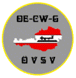

OE-CW-Gemeinschaft, Austrian Club for CW enthusiasts.
First Austrian Telegraphy Interest Group,
would like to introduce itself
Morse telegraphy is the oldest and most traditional form of long distance communication but regrettably the era of CW has come to an end in the field of commercial as well as Naval radio services.
If thousands of radio amateurs all over the world still make use of their key, it is not due to nostalgic enthusiasm alone but because telegraphy, as is universally acknowledged, enables global communication by use of simple means even under unfavorable conditions.
To provide a homestead for all radio amateurs who are willing to make use of their key at least once in a while or - even better - to give preference to telegraphic communication in general, the Radio Society of Austria - ÖVSV - has decided to create a specific section for telegraphy within the society under my auspices from May 24th 1997, whereby interested persons from Austria as well as abroad may subscribe into the OE-CW-G, an interest group for radio telegraphy whose objectives are to promote the improvement of telegraphy techniques and encourage the use of CW thereby attempting to establish contacts and create friendship between radio amateurs all over the world.
To all who want to join our club, the simple application procedure is as follows:
1. Please send informal application for membership in the OE-CW-G
2. To encourage the use of CW on the bands add copies of 20 QSL cards confirming contacts in telegraphy
3. One valid contact (QSO) on one of the sked evenings
4. To cover printing and mailing costs please add 8 IRCs or appropriate value in foreign currency (membership is lifelong, no further charges are collected)
Contact: OE6FYG Herbert Lafer Speltenbach 55 A-8280 Fürstenfeld
Monthly QTC in German:
Every 1st Saturday of a calendar month on 3575 kHz at 8 hours local time.